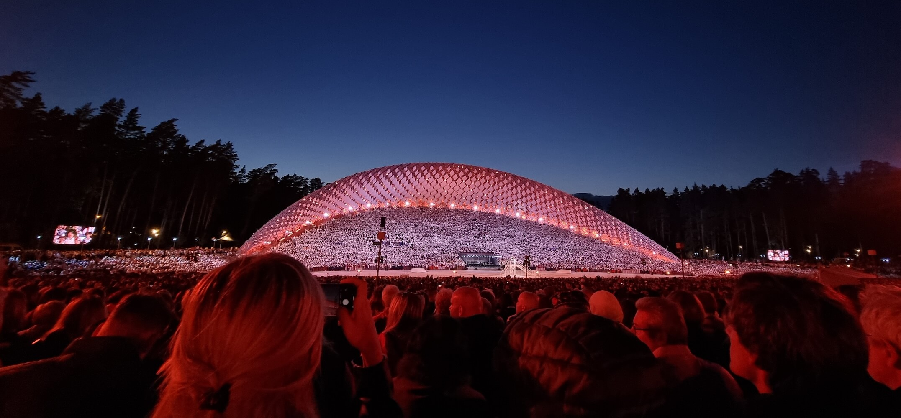

2023 Wrapped .
For the past few years I've tried to do a little retrospective post on the year that was. This year, inspired by the endless "such-and-such wrapped" tracking-data-as-entertainment emails that I've been getting, I'm going to mix up the format a bit and throw in an extra rundown of some of the media I enjoyed this year.
So, let's go. Here's my 2023 Wrapped (replete with overly-excitable subheadings)
"This year, your contracts were eclectic" .
I had a really varied year of freelancing in 2023 - I've worked on a bunch of brochure sites, a full design system, an app dashboard, I refactored part of a project written in Elm, I built a PWA with lots of time and timezone-dependent features and so much more that I struggle to recall.
2023 also marked the milestone of being five-years-freelance and I worked extra hard this year. If I'm honest, I worked too hard and burnout is once again knocking at my door. I still love the flexibility of the freelance life, but I'm starting to get the itch to do my own thing. I'm not sure what "my own thing" will be yet, but in 2024 I'm going to take time out of client work to try my hand at a few personal projects.
"This year, the words came easier" .
Every year I try to blog more and, whilst my drafts folder is still pretty well stocked, this year I published a tiny bit more than I did in previous years. This year I also challenged myself to write a little less technically and a little more conceptually. I think I just-about pulled it off.
Here's a quick rundown of links:
"Another year, another framework" .
In 2023 I did a hell of a lot of work with Nuxt and Vue. Moreso than any other framework or programming language. I really enjoy using Nuxt and will continue to do so, but this year the fragmentation of Nuxt 2/3 compatibility has caused me quite a few serious headaches. In fact (and this is absolutely not intended as a slight on the work of the Nuxt team) this year I started questioning the use of frameworks altogether.
But then, I did a couple of projects with Astro.
Over the years I've slowly come to the realisation that the thing I like most about front-end frameworks is not encapsulating JavaScript or declarative code or any of the usual DX suspects. I like the componentisation of reusable HTML. Simply, I like not having to copy-paste a bunch of template code like we did in the old days. Because of that, Astro has been a great fit for me - Astro components allow me to assemble chunks of HTML and CSS and opt-in to all the benefits of a framework like React or Vue if and when I need them. No client-side JS by default? That's pretty damn cool and I'm looking forward to more Astro projects in 2024.
"This year, you left the UK for the first time in 3 years" .
For someone who loves to travel, I haven't been out of the UK since I returned from Japan in March of 2020. To be frank, it has been an absolute slog. Thankfully, this summer, I was finally able to break the streak (and the Great British Depression that came with it).
My partner is Latvian and every five years Latvia holds a huge cultural celebration of traditional songs, dancing and costume – Dziesmu un deju svētki . In July we flew out for two weeks of seeing her family and friends, eating great food and listening to fantastic musical performances.
The highlight for me was the final concert, deep in a forest park and featuring a choir of 16,000 people. Add to that the crowd and you have close to 40,000 people singing long into the night. The next event is in 2028 and I can't recommend it enough. Just look at the size of this stage; you don't so much hear the songs as feel them in your chest. Magic.

It's hard to understate the positive effect that travel has on my mental health, so I'm really looking forward to travelling more in 2024.
"This year you got super sick of superheroes" .
My extreme burnout from the endless Marvel content-machine peaked this year (Hi-and-bye, Quantumania) but thankfully there has been a wealth of decent alternatives this year. Here are my top film & tv picks from the last year:
The Bear: season 2 - I loved the first season and tbh, the ending of season one was so well handled that I'd have been happy if it was a one-and-done show. Against my initials fears though, season two was better in almost every way (and not least because I'm an absolute sucker for a redemption arc). My standout episodes were Honeydew and, of course, Forks.
Past Lives - Beautifully acted, absolutely gorgeous to look at, and with an ambiguous and nuanced plot. When it finished, my partner and I sat and discussed our interpretations for quite a while afterwards. I still can't get over how this was director Celine Song's first movie. Phenomenal talent.
Godzilla Minus One - This one slipped into my list right before Christmas. Some people grow up with Star Wars or Lord of the Rings or whatever, but for my brother and I we had the Godzilla movies. The recent US-made 'zilla flicks have been of diminishing quality but they still provide me some small amount of satisfaction for the lizard-brain. Minus One is a very different and very character-driven movie. Normally I'd be rooting for the big lad, but here he was so intimidating and the characters so well drawn that I was cheering them on instead.
Even if you're not a fan of kaiju movies, I'd recommend giving this one a watch. It's a brilliant anti-war allegory and absolutely the best Godzilla has been since the 1954 original. On a personal level, hearing the original Godzilla theme blasting out in a cinema was a real treat too.
"In 2023 you played a whole bunch of games...or did you?" .
I thought I played a lot of games this year, but statistics don't lie. As I wrote on Mastodon:
Of all the "isn't how we track you fun!!" Wrapped things this year, I enjoyed the Xbox Gamepass one the most because it showed that my girlfriend has basically worked a second job playing Age of Empires II
That said, I did fit a couple of gems in the gaps between AOE2:
Zelda: Tears of the Kingdom – I've been a Zelda fanboy since the LttP days so, if that means anything to you, I probably don't need to elabourate much more on why I loved this game. I'm completely in awe of how Nintendo managed to reuse so much of the game world from Breath of the Wild and still make it feel fresh and innovative. The level of creativity and fore-planning in this game is genuinely inspiring (web industry take note).
Also, the music. OMG the music.
Alan Wake II - This was a curveball; the sequel I never knew I wanted. I played the original game back when it came out and I was honestly lukewarm about it. When AWII launched around Halloween, I knew very little about it, but decided to take a punt on it. Oh damn, is it good. It has a pulpy and totally overblown story, parts of it are genuinely scary and its blending of game and live-action looks phenomenal even if it creaks a little bit on my Xbox Series S. Seriously, the game crashes very frequently on Series S and yet I couldn't even be mad at it. I needed to see what fresh madness would happen next.
Wrapping up .
So that was my 2023. If I'm entirely honest, it feels a little bit like I only just wrote one of these posts. This year has absolutely flown by for me, but I'm feeling ready for the changes that the new year will bring.
Cheers for reading this far, and here's to a happy and healthy new year in 2024! 🍻

Hi, my names is Sebas .
I'm a freelance creative developer helping awesome people to build ambitious yet accessible web projects.